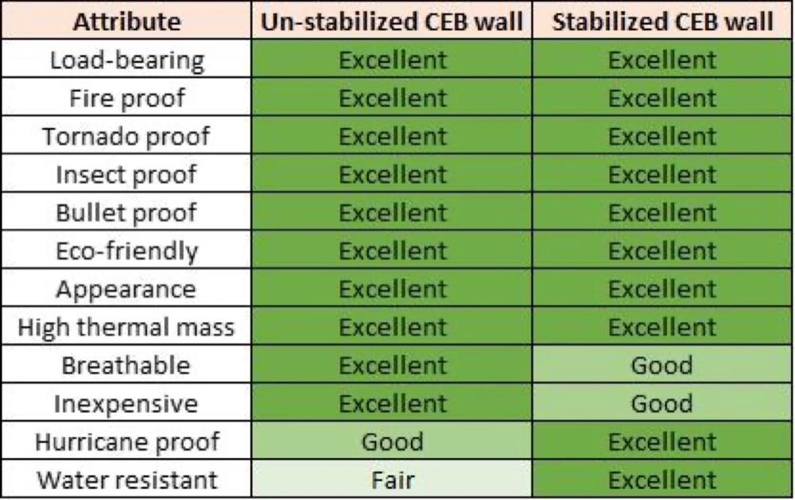
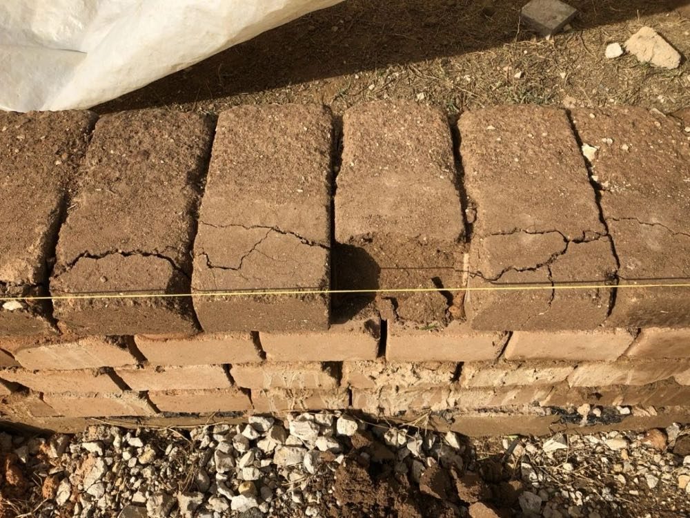
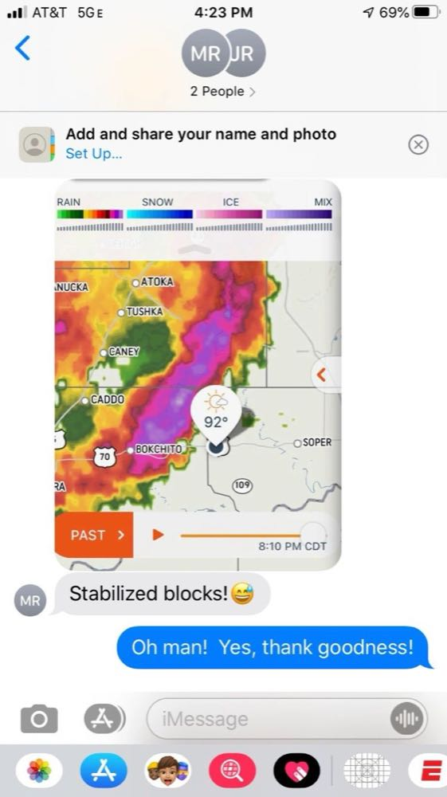

The difference between stabilized and un-stabilized compressed earth blocks (CEBs) is commonly mis-understood. Sometimes un-stabilized CEBs are thought to be a little more durable than they actually are...conversely, I believe cement-stabilized CEBs are not even remotely given the credit they deserve as a robust building material, by the mainstream building community.
When you see those tight, crisp cornered, un-stabilized CEBs push out of our AECT machines, it's easy to think of them as being very sturdy...and they are. They're heavy, bullet proof, fire proof, insect proof, sound proof, and great thermal insulators. My business partner and I were so sold on the concept that we bought the company...so it was a little bit of a shock shortly after completing the purchase when the prior owner pointed to an eroding demo CEB wall on the AECT property and said "look...that wall has been rained on five or six times already, and the top blocks are still only about half eroded". That was supposed to be a demonstration of how good the blocks were...but it didn't seem very reassuring. And three years into this venture, I've realized I'm definitely not the only person who has experienced that misconception...in fact, I think over half the people I talk to who come to us with some knowledge of CEBs still find it shocking that you could spray a water hose at an un-stabilized earth block wall for just a matter of minutes and start to destroy it.

Un-stabilized earth blocks are NOT waterproof. If you submerge one in water for a few hours the block will cease to exist. While that doesn't bode well for a building material, there are several ways to mitigate the risk if you still want to build with un-stabilized CEBs. Build outside the flood plane, start with a concrete or cement-stabilized CEB knee-wall at the base of your building, build large overhangs all around the house, and apply a lime plaster to the exterior of the building. Keep in mind that while you can do all these things and your home will likely last 200 years once you're done with construction, your blocks will still be vulnerable during the six to twelve months that you're constructing your home. This means you can spend up to an hour preparing for rain every evening before leaving the worksite...covering up the earth block walls with plastic sheeting, weighing/tying the plastic down and also covering up all the open pallets of blocks that will be sitting around the site. Or you can listen to the weather man and only cover up when rain seems likely...but know that if the weather man is wrong and it rains on your un-protected, un-stabilized CEB wall...the top course of blocks will be damaged and will have to be removed before continuing on with construction...likely delaying your schedule by an entire day. And keep in mind that rain often comes with wind...so there will be times when, even though you cover up your wall for the night, you could still wake up to a wall that had the plastic blown off of it and the top blocks damaged. I, myself, have had this happen on my un-stabilized CEB builds multiple times. I have found myself out on a build site at 2:00 a.m., in complete darkness, on a ladder, in freezing rain trying to cover up an un-stabilized CEB wall. It seems crazy until you've had to completely un-do then re-do all the work you did the day before and watch 300 CEBs go to waste.

I give this scathing review of un-stabilized CEBs not to completely dissuade you from building with them. If you're a purist and hell-bent to go the un-stabilized route, I think you should go for it, mitigating the risks using the safeguards mentioned above. But I just like those who choose to do it to be completely informed ahead of time. Now for a stance on cement-stabilized CEBs.
As much as un-stabilized CEBs are sometimes given too much credit for their ability to withstand the elements, cement-stabilized CEBs are, to perhaps an even greater extent, not given enough credit for their durability. Once a week we hear from an architect or engineer who "doesn't believe in CEBs as a structural building material"...even when the blocks in question are cement-stabilized. Even professionals in the industry who PROMOTE earthen construction will insist on incorporating a 4' concrete wall at the base of the wall, so that rainwater can't splash up onto the blocks...it's okay for water to get on concrete but not on cement-stabilized CEBs? I have to wonder if some of these people have ever actually seen a stabilized CEB in real life...or if they are just applying blanket rules to CEB construction based on what they know about un-stabilized CEBs. Despite our 5,000 years of successful earthen builds (with many 1,000-year-old plus earthen homes still standing today), I can still give building designers a pass if they don't want to accept the liability of building with un-stabilized CEBs. But taking the same stance against cement-stabilized CEBs just tells me that they are either very mis-informed or just lazy. The differences between the two types of CEBs are like night and day. While un-stabilized blocks have the Achilles heel of being overly prone to water damage, stabilized CEBs with as little as 5% cement added in to the soil are the exact opposite. I mentioned earlier that an un-stabilized CEB will dissolve in water within a matter of hours. On the other hand, at AECT we have several 7% cement-stabilized CEBs that have been sitting in water for over 20 years and have not even begun to erode. I gave you the anecdote above about being out covering up walls in the rain at 2:00 a.m. on an un-stabilized CEB build...by comparison I'll tell you that on a 7% cement-stabilized CEB build last winter, I went out of town for two weeks and slept soundly while torrential rain showed up on the radar night after night. When I returned, the walls looked as perfectly preserved as when I had left them. All that said, you would actually have trouble finding a wall system that performs better in a flood than a cement-stabilized CEB wall. Wood rots and mildews, drywall turns to mush, fiberglass insulation is ruined. My business partner, Steve, endured Hurricane Harvey in Houston back in 2017 and saw the flood damage done to thousands of homes. He points out that had any of those homes been built out of cement-stabilized CEBs, they could have waited for the flood waters to recede and then almost instantly move back into their home with little damage to the wall system...no rot, mold, mildew, or mess. The way I look at it is that cement-stabilized CEBs have all the positive qualities of cement blocks (strong and waterproof) along with the positive qualities of earth blocks (eco-friendly, sustainable, high thermal mass, and beautiful).


At AECT, a big part of our mission is to educate the public about compressed earth blocks and all the great things that can be done with them. If you're thinking about building with earth blocks and still doing your research, hopefully this blog entry will help you make a more informed decision on whether to choose stabilized or un-stabilized CEBs. And if you work in the design and construction industry, hopefully this makes you take another look at cement-stabilized CEBs as an all-around great building material.